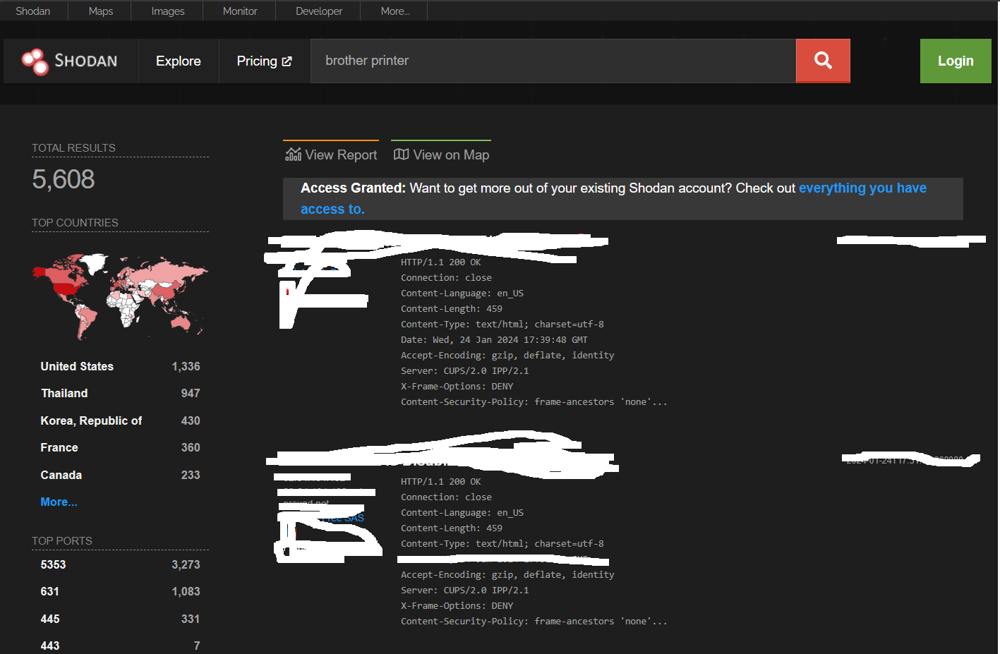
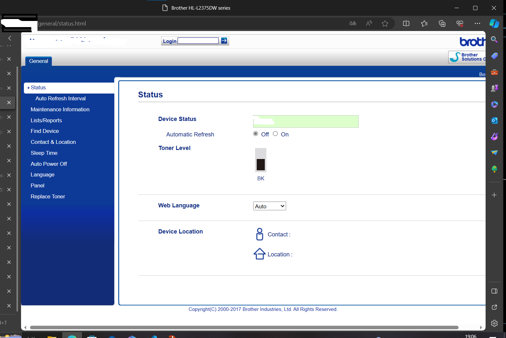
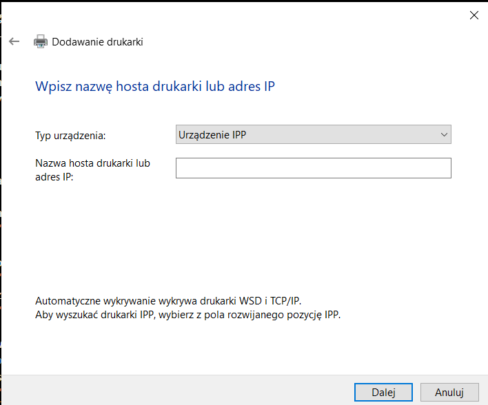

Czym jest protokół ipp?
IPP (Internet Printing Protocol) to protokół komunikacyjny, który umożliwia drukowanie dokumentów w sieci komputerowej,
zwłaszcza w środowisku internetowym.
IPP jest protokołem aplikacyjnym warstwy aplikacyjnej w stosie protokołów TCP/IP.
Po co się upublicznia drukarki do internetu?
Prosta sprawa aby zdalnie drukować pliki
Takie rozwiązanie bardzo ułatwia prace/ życie gdyż nie musimy być podpięci fizycznie do drukarki tylko do sieci
Jakie są negatywne skutki takiego rozwiązania?
Jeżeli nie zabezpieczymy drukarki przed nieupoważnionym dostępem cyberprzestępca może zrobić poniższe rzeczy:
- Wydrukować coś na twojej drukarce
- Wejść w panel administratora drukarki przy odrobinie sprytu i narobić szkód
- W niektórych przypadkach gdy nasza drukarka sieciowa ma krytyczną dziurę bezpieczeństwa (skutkowaną brakiem aktualizacji jej) cyberprzestępca może wykonać tak zwany exploit o nazwie "Remote code execution" którego skutki mogą być bardzo złe na przykład
wejście do twojej sieci lokalnej (bardzo niebezpieczne dla twojej sieci), operowanie drukarką na poziomie firmwareowym (możliwośc narobienia jeszcze większych szkód twojej drukarce a nawet jej zniszczenie)
Okej pogadaliśmy o skutkach złego zabezpieczenia drukarki teraz pokaże jak można taki błąd wykorzystać czyli przechodzimy do części właściwej tego blogu!!!
Krok pierwszy: Znalezienie drukarki używając strony shodan.io
Shodan.io to wyszukiwarka hostów czyli urządzeń które posiadają karte sieciową. Mozemy na niej znależć drukarki lodówki telewizory serwery itd.
Czemu można to wyszukać? : To proste! Bo to jest udostępnione do internetu
Wracając wchodzimy na strone shodan.io i wpisujemy nazwe producenta drukarki np brother oraz "printer"
I to juz! Na szczęście prawo jeszcze mi pozwala przeglądać strone internetową drukarki więc zróbmy to!
Zazwyczaj hasło do takich stron jest defaultowe czyli możecie wyszukac wpisując serie model i producenta i dopisac default password w wyszukiwarce i otrzymacie informacje o domyslnym hasle
Po zalogowaniu moglibysmy zrestowac drukarke , zmienic ustawienia drukarki i sieciowe.
Jak podłączyć sie do drukarki?
Dobra jeżeli posiadasz swoją własną drukarkę bądz masz zgode aby na niej drukować rzeczy wchodzisz w windowsie "Dodaj drukarke lub skaner" pozniej klikasz "Mojej drukarki nie ma na liscie (Ale powinna byc jesli jest w twojej sieci LOKALNEJ!) "
Wybierasz dodaj drukarke uzywając ip lub nazwy hosta
Pozniej klikasz dalej i wybierasz opcje urządzenie ipp wpisujesz adres ip i gotowe! Jest dodana drukarka do twojego komputera!
A jak przed tym sie zabezpieczyc ???
Pokaże ci listę dobrych praktyk
- Zablokuj port 631 dla sieci WAN w firewallu routera , dzięki czemu osoba z zewnątrz (z internetu) nie będzie mogła się połączyć z twoją drukarką
- Zmień hasło do drukarki - Tym sposobem zniechęcisz 90% ludzi do "hakowania jej " No i zapobiegniesz przed atakiem podstawowych botów
- Aktualizuj drukarkę! Aktualizacja jej nie dość że poprawia jej pracę to jeszcze dodaje łatki bezpieczeństwa które zniwelują szanse na atak exploitem do minimum.
- Dodaj tylko określone adresy które mogą się łączyć z tą drukarką - jeżeli pracujesz w domu i chcesz coś wydrukować w pracy poproś admina (albo zrób to sam jeśli masz zgode!) Dodaj regułę w firewallu routera i drukarki o ile taką funkcje ma!
Dla ciekawskich!
Szanuje że dotrwałeś do tej sekcji artykułu
Pisałem o ataku exploitem racja? Chętnie ci pokaże projekt pewnego użytkownika który bardziej się wgłębił w ten temat niż ja!
Jeżeli jest ktoś zainteresowany zarządzaniem drukarką na poziomie firmwareowym polecam zobaczyć ci ten program! PRET to aplikacja napisana w pythonie która za pomocą języków takich jak postscript PJL i PCL pozwala operować drukarką na poziomie bardzo zaawansowanym
Instalacja
PRET wymaga tylko interpretera języka Python2. Aby jednak uzyskać kolorowe wyjście i obsługę SNMP, należy zainstalować moduły innych firm:
- install colorama pysnmp
Jeśli jest uruchomiony na konsoli systemu Windows, a znaki Unicode nie są wyświetlane poprawnie, zainstaluj moduł win_unicode_console:
- install win_unicode_console
W przypadku eksperymentalnego, "bezsterownikowego" drukowania (patrz polecenie print), należy zainstalować ImageMagick i GhostScript:
- apt-get install imagemagick ghostscript
O to przykładowa komenda!
- ./pret.py (przykładowa nazwa hosta/ip) (nazwa języka drukarki)
To koniec artykułu dziękuje ci że poświęciłeś czas na przeczytanie jego i mam nadzieję że czegoś się niego nauczyles (oczywiście legalnego 😁)
Żródła!